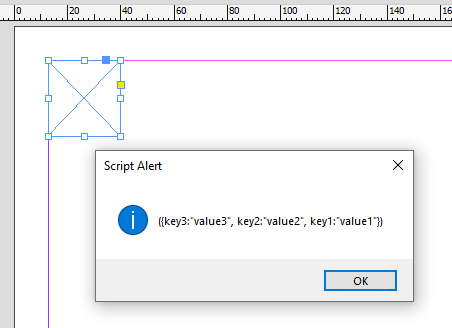

Label
Labels are a way to tell the script which exact objects to process.
For example, the user may create a template and label (manually in the panel) a graphic frame as ‘image’ and the text frame underneath it as ‘caption’. The script may create documents from the template and insert images and captions reading data, say, from an Excel file. These labels are visible to and editable by the user. But only one label can be used per object. Alternatively, we can use insert/extractLabel methods to insert/extract to one object as many labels as we want using key-value pairs, but these are invisible to the user.
Find labels
var pageItems = FindLabels(scope, "My Label");
function FindLabels(there, label) {
var array = [];
var pageItems = there.allPageItems;
for (var i = 0; i < pageItems.length; i++) {
if (pageItems[i].label == label) array.push(pageItems[i]);
}
return array;
}
Find labeled frames
function FindLabeledFrames(frames, label) {
var array = [];
for (var i = 0; i < frames.length; i++) {
if (frames[i].label == label) array.push(frames[i]);
}
return array;
}
Get item from collection
function GetItemFromCollection(label, collection) {
for (var i = 0; i < collection.length; i++) {
if (label == collection[i].label) return collection[i];
}
return null;
}
Get the list of all scripts labels
By Loic Aigon
var txtfrm = app.selection[0];
txtfrm.insertLabel ("key1", "value1");
txtfrm.insertLabel ("key2", "value2");
txtfrm.insertLabel ("key3", "value3");
var getLabels = function(item) {
var f = File(Folder.desktop+"/"+item.id+".idms" ),
x, a, o = {}, keys, n;
if ( !(item.exportFile instanceof Function) ) return;
item.exportFile ( ExportFormat.INDESIGN_SNIPPET, f );
if ( !f.exists ) return;
f.open("r");
x = XML ( f.read() );
f.close();
f.remove();
keys = x..KeyValuePair;
n = keys.length();
if ( !n ) return;
while ( n-- ) {
o[String(keys[n].@Key)] = String(keys[n].@Value);
}
x = null;
return o;
}
var labels = getLabels ( txtfrm );
alert ( labels? labels.toSource() : "None" );

Click here to dowload the function